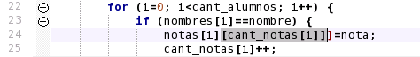
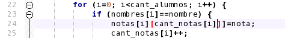

Otro error relacionado al anterior, está en la expresión de la línea 24 ("notas[i][cant_notas[i]]]=nota;"). Ubique el cursor sobre la palabra "cant_notas" de esta línea y presione Ctrl+M. Este comando selecciona un bloque de código, o de una expresión (estos bloques se delimitan con paréntesis, corchetes o llaves). Observe que el bloque seleccionado no incluye al último corchete de esa línea. Este corchete está demás y debe ser eliminado.

Otra forma de observar lo mismo, es colocar el mouse sobre cada uno de los corchetes. Los corchetes correctamente introducidos se marcan en rojo fuerte, marcando del mismo color el corchete complementario. Los corchetes mal colocados (que no se puede encontrar su complementario), por el contrario, se resaltan en rojo oscuro o bordó. Esta misma idea se puede aplicar a paréntesis y llaves.

Volver... Continuar...